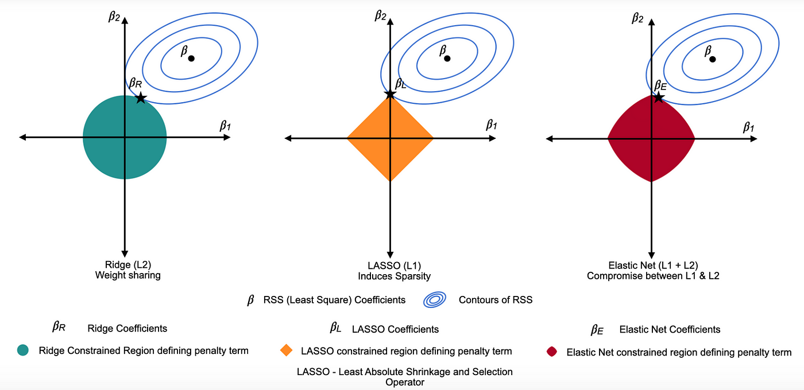

5. Introduction of Spatial Analysis#
5.1. What’s spatial analysis#
Transformation, manipulation and application of analytical methods to spatial (geographic) data (Goodchild)
It’s about
geospatial kdd(Knowledge discovery from data)\( data \to information \to knowledge \to wisdom \)
5.2. What’s “geospatial”#
Location + value (attribute)
When location changes, the information content of data changes
non-spatial: location does not matter \(\to\)spatial invariance
5.3. Components (workflow) of spatial data analysis#
Mapping and geo-visualization
Showing interesting patterns
Exploratory spatial data analysis
Discovering interesting patterns
Spatial modeling
Explaining interesting patterns
Optimization,Simulation,Prediction
5.4. What’s Spatial Questions#
Where do things happen
Pattern, clusters, hot spots, disparities
Why do they happen
Location decisions
Spatial regression, correlation analysis
How does where things happen affect other things
(context, environment)
Spatial autocorrelation
How does context affect what happens
Interaction
Where should things be located
optimization
5.5. Spatial data types#
Remember match between the scale of process you study and the scale of measurement
5.6. Point#
Characteristics
Location of events
Research question
Randomly in space or clustered?
Point pattern analysis
KDE(Heat Map)
5.6.1. Surface#
Characteristics
Continuous spatial field
Air quality, noise, price
Research question
Given discrete measures, what’s an air quality surface for a region
Spatial interpolation
Kriging
5.6.2. Discrete spatial data - lattice data#
Characteristics
Area units
Census tracts, counties, countries
Research question
Where are hot spots of income inequality in the city
Cluster detection
Location similarity + Attribute similarity
5.6.3. Networks#
5.7. Modifiable Areal Unit Problem (MAUP)#
What’s the proper
spatial scaleof analysis?Spatial heterogeneity- different processes at different locations/scalesBoth size and spatial arrangement will affect the result

5.8. Change of Support Problem#
Variables measured at different
spatial scalesNested, hierarchical structures (county / states)
Non-nested, overlapping (school district / census tract)
Solution
Aggregate up to a common scale
Interpolate/impute -
Bayesianapproach